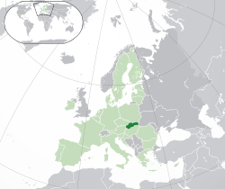

Hlavní město: Bratislava
Statní řizení: Parlamentni Republia
Uřední měna: Euro
Rozloha: 49,035 km2
Popis země:
Slovensko je země s fascinující historií a malebnou přírodou. Jeho horská krajina je domovem pro mnoho turistických atrakcí, včetně Vysokých Tater a Nízkých Tater. Slovenská kultura je bohatá na folklór a tradiční řemesla, jako je vyřezávání dřeva a výroba keramiky. Hlavním městem je Bratislava, která kombinuje historické památky s moderním životem. Slovensko je známé svými termálními prameny a lázněmi, které lákají návštěvníky z celého světa. Země je také bohatá na kulturní festivaly a události, které oslavují slovenskou tradici a identitu.
